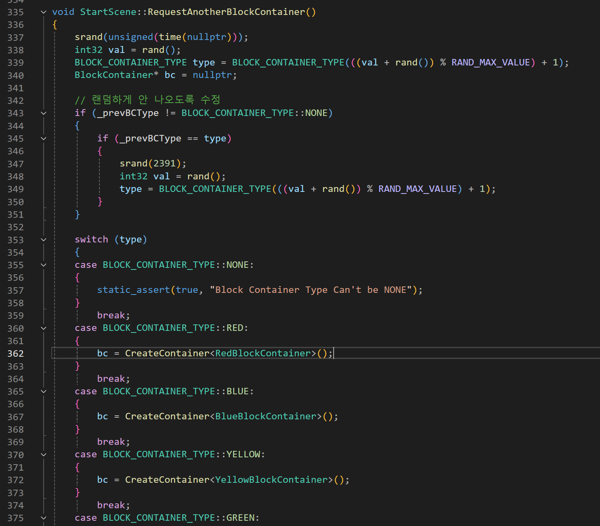
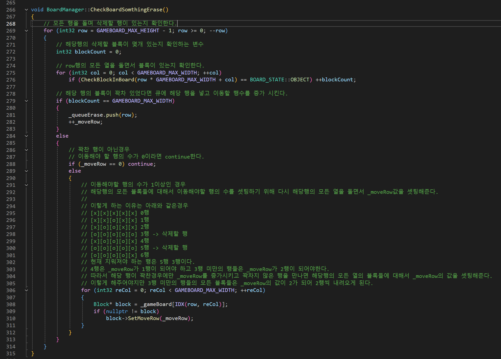
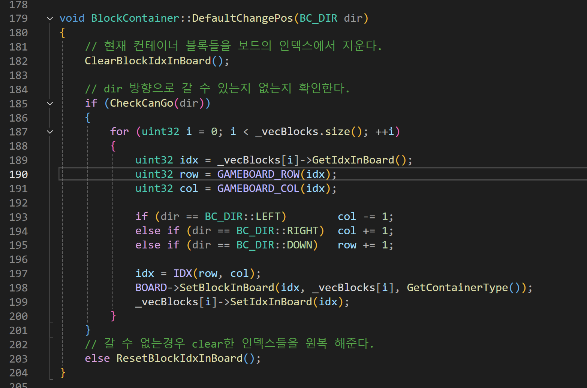
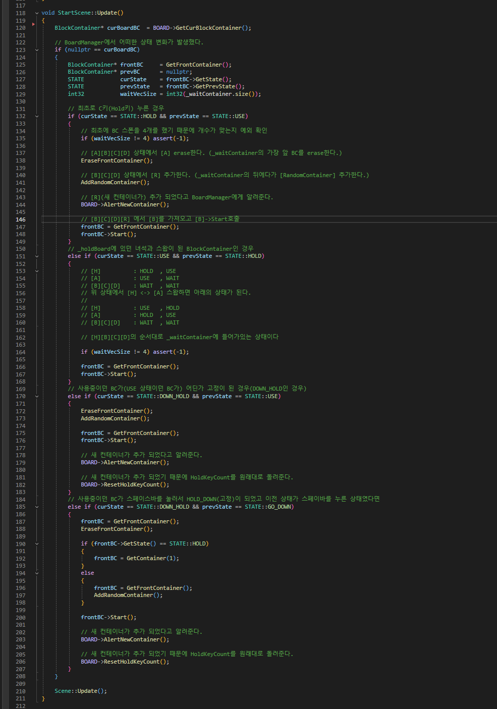

테트리스 (2D)

블록 생성 및 삭제
템플릿 / 2차원 배열BlockContainer가 Block 4개를 소유하는 구조. 템플릿 함수로 랜덤 블록 생성. 2차원 배열(Board)의 행을 순회하여 꽉 찬 행 탐지 → _moveRow 누적으로 위 블록을 정확한 칸 수만큼 내림.
BlockContainer의 자식 클래스(Yellow, Blue, Green 등)가 각각의 블록 형태, 이동 규칙, 회전 규칙을 정의합니다. 충돌 판정은 별도 충돌체 없이, Board 객체에 접근하여 현재 블록의 행/열 위치가 이동/회전 가능한지 직접 확인합니다. 행 삭제 시에는 아래서부터 위로 순회하며 꽉 찬 행을 큐에 넣고, _moveRow를 누적하여 위 블록들이 정확한 칸 수만큼 내려오도록 합니다.



CheckBoardSomthingErase 핵심
void CheckBoardSomthingErase() {
int _moveRow = 0;
for (int row = BOARD_H - 1; row >= 0; --row) {
bool bFull = true;
for (int col = 0; col < BOARD_W; ++col) {
if (board[row][col] == 0) {
bFull = false;
break;
}
}
if (bFull) {
// 해당 행 삭제
ClearRow(row);
_moveRow++;
score += 100;
} else if (_moveRow > 0) {
// 위 블록을 _moveRow만큼 아래로 이동
MoveRowDown(row, _moveRow);
}
}
}블록 이동 및 보관
상태 머신 / HOLD블록 이동 시 Board에서 현재 인덱스 제거 → 이동 가능 확인 → 새 인덱스 등록. 불가 시 원복(ResetBlockIdxInBoard). C키로 HOLD 칸에 임시 보관, 상태(USE/HOLD/DOWN_HOLD/GO_DOWN) 기반 예외 처리.
블록 이동은 Board에서 현재 인덱스를 먼저 지우고, 이동/회전이 가능한지 확인한 뒤 가능하면 새 위치에 등록하고, 불가능하면 원래 위치로 원복하는 방식입니다. C키를 누르면 HOLD 칸에 보관되며, HOLD에 이미 블록이 있으면 현재 블록과 교체합니다. 블록 컨테이너에 USE/HOLD/DOWN_HOLD/GO_DOWN 상태를 부여하여, 각 상태에서 수행 가능한 기능을 예외 처리했습니다.


DefaultChangePos + 상태 전환 핵심
bool DefaultChangePos(int dx, int dy) {
// 1. Board에서 현재 인덱스 제거
RemoveBlockIdxFromBoard();
// 2. 이동 가능 확인
for (auto& block : blocks) {
int nx = block.x + dx;
int ny = block.y + dy;
if (nx < 0 || nx >= BOARD_W || ny >= BOARD_H || board[ny][nx] != 0) {
ResetBlockIdxInBoard(); // 원복
return false;
}
}
// 3. 새 위치 등록
for (auto& block : blocks) { block.x += dx; block.y += dy; }
SetBlockIdxInBoard();
return true;
}
// Update 상태 전환
switch (m_eState) {
case USE: HandleInput(); AutoDrop(); break;
case HOLD: SwapWithHold(); m_eState = USE; break;
case GO_DOWN: HardDrop(); LockBlock(); m_eState = USE; break;
}